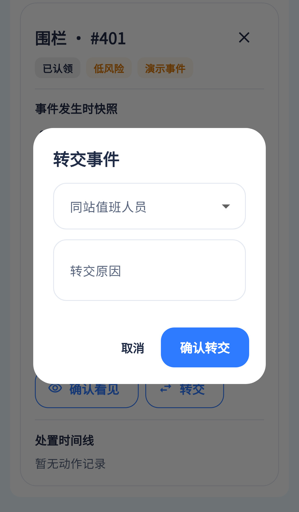

转交请求已有，搜索及责任上下文展示待补。
相同 · 已有基础
接收人、转交原因、取消/确认与同站约束已有。
不同 · UI与场景
设计为带搜索人员卡的展开内容；当前居中对话框和下拉名单，缺当前事件/当前责任人摘要。
01 / 先看 UI
两图显示宽度统一；设计390px与当前360逻辑宽的画布不同。各图可独立滚动到底，点击“原图”放大。


使用既有组件截图；业务数据为示例。
02 / 逐项核对功能与小交互
入口：事件更多处置 → 转交 · 当前形态：弹层
| 编号 | 部位 | 设计要求 | 当前UI | 功能结论 | 下一步 |
|---|---|---|---|---|---|
| 27-01 | 事件摘要 | 当前事件与责任人 | 当前需从背景详情阅读 | 部分：对话框内缺摘要 | 补只读摘要，防转错事件 |
| 27-02 | 接收人 | 搜索接收人、姓名/角色卡 | 当前同站值班人员下拉 | 部分：operators已接，无检索与角色卡 | 补搜索、角色、稳定ID |
| 27-03 | 范围 | 可接收的同站人员 | 当前用duty/operators | 已有代码 | 确认无效用户/自己/跨站约束由服务端执行 |
| 27-04 | 原因 | 转交说明 | 当前输入框已有 | 已有代码：草稿原因传reason | 补必填提示与字数规则 |
| 27-05 | 确认 | 确认转交 | 已有按钮 | 已有代码：transfer带toUserId/reason/version | 成功重载责任人及时间线，409保留输入 |
| 27-06 | 取消 | 关闭不执行 | 当前取消按钮 | 已有代码 | 保留取消及返回键行为 |
| 27-07 | 权限 | 仅合法责任人可操作 | 当前本人认领且claimed/handling | 已有代码 | 不因参考始终显示按钮而绕权限 |
源码依据
events/events_page.dart:1226；events/event_policy.dart:45；events/event_repository.dart:136
链接为随报告保存的带行号快照；行号对应分析时源码。以函数和字段共同定位，不能将请求代码视为执行成功证据。